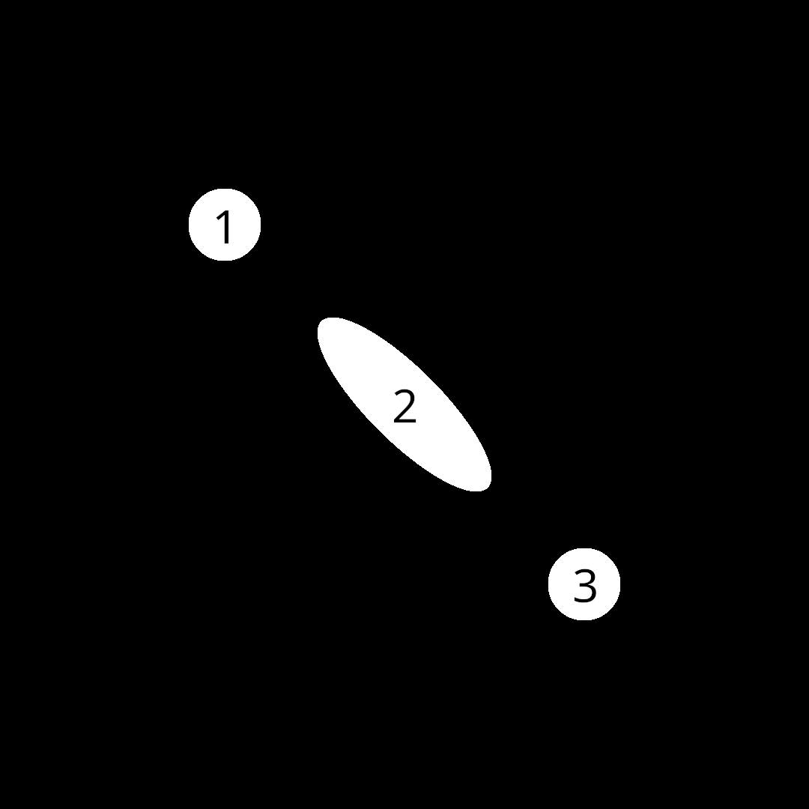

Smear Frames
In many (most) animations, artists will create different kinds of frames with different purposes. Key frames are those with very specific details that the audience must pay attention to in order to understand the purpose of the work. Then there in-betweens – frames that are drawn in-between key frames with the intent of guiding the audience's attention to the next item of interest. When there is heavy motion between different key frames, artists will draw smear frames, where the physics is distorted and characters will look plain wacky.
There is a strong debate within many different artistic communities about when and where key frames should be used, and I am not about to start that debate. Rather, I want to show a simple example of smear frame generation in quibble:

Here, I have superimposed the frame number on to each blob. Blob 2 is the smear frame we are generating here.
This example will closely follow the previous ones (1, 2, and 3), so be sure to browse through those if you haven't already. Also, the full code can be found on github (C, quibble).
Generating multiple frames in C
The biggest difference between this example and the previous one is that we will be modifying the C code here to generate multiple frames. In particular, we will be adding additional arguments to our poem that will be modified each frame and then modifying those variables on the C side each frame from within a loop.
As we are generating a smear frame, the two most important variables to pass in to the quibble scribble will be position and velocity, with velocity changing the shape of our object. Let's look at the loop first:
for (int i = 0; i < num_frames + 1; ++i){
location = qb_point_2D(-0.5 + (float)i/num_frames,
-0.5 + (float)i/num_frames);
if (i < half_frame){
velocity = qb_point_2D(2 * (float) i / half_frame,
2 * (float) i / half_frame);
}
else{
velocity = qb_point_2D(2.0 - 2.0 * (i-half_frame) / (half_frame),
2.0 - 2.0 * (i-half_frame) / (half_frame));
}
qb_set_args(&qp, "smear_shader", 2,
"quibble_point_2D location", &location,
"quibble_point_2D velocity", &velocity);
qb_run(qp, "smear_shader", width*height, 256);
qb_pixels_device_to_host(qpix);
create_filename(filename, i);
qb_write_png_file(filename, qpix);
printf("%s\n", filename);
}
Here, we are iterating through num_frames and moving the ball from $(-0.5, -0.5)$ to $(0.5, 0.5)$. We are also modifying the velocity such that it increases until we hit float half_frame = num_frames*0.5, and then decreasing past that point. Every step, we are using qb_set_args(...) to set the arguments location and velocity each frame. Then we qb_run, get send the pixels to the host (CPU – qb_pixels_device_to_host(qpix)), and then write to file. Note that the filename generation will create a bunch of files that look like checkxxxx.png, where the xxxx will be replaced with the frame number. This is done with the following function:
void create_filename(char *buffer, int i){
sprintf(buffer, "check%d%d%d%d.png",
i%10000 - i%1000,
i%1000 - i%100,
i%100 - i%10,
i%10);
}Everything else follows from previous examples. The full code can be found here.
The quibble scribble
The quibble scribble also largely follows from the previous example. In this case, we need to create a smear function and then a main poem:
@include "QB/chaos.qbl"
@include "QB/output.qbl"
quibble_point_2D rotate(quibble_point_2D pt, float theta){
return qb_point_2D(pt.x*cos(theta) - pt.y*sin(theta),
pt.x*sin(theta) + pt.y*cos(theta));
}
__verse smear(quibble_point_2D pt,
quibble_point_2D location,
quibble_point_2D velocity |
int num_ignore = 20;){
float theta = atan2(velocity.y,velocity.x);
if (pt.y < 0){
theta += 2*M_PI;
}
// Moving back to origin for a simpler transform
pt.x -= location.x;
pt.y -= location.y;
// Scaling along x by the speed (magnitude of velocity)
pt.x *= 1 + sqrt(velocity.x*velocity.x + velocity.y*velocity.y);
// Rotating according to velocity direction
pt = rotate(pt, theta);
// Moving back to correct location
pt.x += location.x;
pt.y += location.y;
if (_i > num_ignore){
histogram_output_prgba8888(pt, _clr, cam, qps);
}
}
__poem smear_shader(quibble_pixels_prgba8888 qps,
quibble_simple_camera qcam,
quibble_point_2D location,
quibble_point_2D velocity){
// Drawing a black background first
quibble_point_2D pt = qb_find_point_location(_idx, qcam);
quibble_pcolor_rgba8888 qcolor = qb_pcolor_rgba8888(0,0,0,1,0.1);
histogram_overwrite_prgba8888(pt, qcolor, qcam, qps);
qcolor = qb_pcolor_rgba8888(1,1,1,1,1);
@SCALL circle_chaos(100, qcam, qcolor |
location = location; radius = 0.1;){
@VCALL smear(_pt, location, velocity);
}
}It is worth inspecting the code here, but it is not too much more interesting on a philosophical level.
Wrapping it into a video
After compiling and running this code, we have a bunch of images to string together into a final video, which we can do with FFMPEG (for example):
ffmpeg -r 2 -i check%04d.png -c:v libx264 -pix_fmt yuv420p output.mp4I do not wish to go into all the details here because FFMPEG is it's own package with it's own (often indecipherable) API. For now, know that:
-rchanges the frame rate-iis "input." There is no-ofor "output"%04dincheck%04d.pngstands for "a number with 4 digits that is left-padded with 0s"c:v libx264 -pix_fmt yuv420pspecifies video codecsoutput.mp4is the output file
FFMPEG is a powerful tool that is useful in a wide variety of places, but this is not an FFMPEG guide, so I'll politely refer you to google for more information on it.